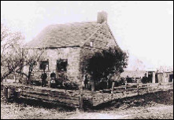

French Family
Association
Mara French, P.O. Box 1109, Sutter Creek, CA 95685-1109. 209-267-0649 marafrench@mindspring.com

The
“Ennis Schoolmaster’s House” built in 1751 in Sandyston, NJ
Chart
#22, Moses French of Sandyston, Sussex Co., NJ;
Wayne Co., PA; Bradford Co., PA
This web page updated by Mara French on 4/15/08. Please send any corrections or additions to Ethel French.
GEDCOM File of Chart #22 with almost 200 Frenches from Ethel French
DNA Test Results for Chart #22
Moses French and Mrs. French, who were of Scotch-Irish descent, were born in Sussex County, New Jersey. Moses French is not identified, but the notes of Ethel and Jeff French indicate that the father of Aaron French was Moses French. Moses was b. ca. 1740, married a woman with the surname Congleton, and had 3 children, all born in NJ: John, Jonathan, and Aaron.
[1]
French, Aaron Jr. b: 1 MAR 1767 in New Jersey d: 1 JAN 1851 in Sheshequin
Township, Bradford County, Pennsylvania, m. Mary Myers (not Ruth Coe as in Chart #21) French, Aaron b:
1815 d: 19 JUL 1864 in Andersonville, Georgia French, Aaron Hezehiah b: 18 JUL
1849 d: 25 FEB 1853 in Trinket or North Ghent Cemetery Old, Sheshequin,
Bradford County, Pennsylvania.
Aaron
Jr. does not have a brother named Ezekiel as in Chart #21. There is no Aaron
Sr. Moses is the father of Aaron Sr. and Moses married a Congleton:
French,
Moses Sr. b: in Sussex County, New Jersey d: BEF 1797
French, Moses Jr. b: 27 FEB 1796 in Morris County, New Jersey d: in Indiana
Children
of Aaron Jr., b. 1 May 1767 NJ: Elizabeth, Christena, Esther, Sarah, Margaret,
Naoma, Walter, Abisha, Aaron b. 1815, Catherine Ethel French
[2] DNA Test -- Moses French
was born in Sussex Co., NJ and died before 1797 in PA. His son, Aaron French,
was born 1 Mar 1767 in NJ and died 1 Jan 1851 at Sheshequin Township, Bradford
Co., PA. His wife, Mary Meyers, was born 28 Apr 1778 in NJ and died 6 Dec 1863
at Sheshequin, PA. Their son, Walter French, was born 3 May 1812 in PA and died
16 Jun 1890 at Sheshequin, PA. His wife, Sarah "Sally" Rogers, was 9
May 1809 in Bradford Co., PA and died there 6 Mar 1864. Their son, Walter Henry
French, was born 19 May 1847 and died 27 Dec 1911 at Chemung, Chemung Co., PA.
His wife, Harriet Gertrude VanSice, was born 7 Sep 1861 in Rome, PA and died 8
Mar 1914 in Athens, Bradford Co., PA. Their son, Ralph Earl French, was born 1
Dec 1894 in Athens, Bradford Co., PA and died 18 Jun 1965 in Syracuse, Onodage
Co., . His wife, Ethel Florence McBain, was born 28 Nov 1905 at Lowville, Lewis
Co., and died 9 May 1975 at Watertown, Jefferson Co.
[3]
From Ethel French: We have been to the cemetery where he is buried several
times and the age stated on the stone at the time of death is 85y, 7m,
7d. We have researched his movements for several years.
1793 Taxpayer in Sussex County, NJ
1797 Marriage in Sussex County, NJ
1798, 1800, 1803 Baptised children in Machackemeck (Deerpark), New York (this is just across the river)
1812 Located in Wayne County, Pennsylvania-church record
1820 Located in Wayne County, Pennsylvania census
1823 Located in Bradford County
1830 Bradford County Census
1850 Bradford County Census
1851 died in Bradford County
[4] J. Michael Frost, frostinaz@cox.net, expert on John Congleton French of Sussex Co., NJ.
Note
that when this chart is regenerated, these links will no longer be valid, but
they will be valid in the actual file listed above. They are listed here for
quick reference and also so that I have a list of them on my computer at home
for searching purposes.
French, Aaron b: 1 MAR 1767 in New Jersey d: 1 JAN 1851 in Sheshequin Township, Bradford County, Pennsylvania
French, Aaron b: 1815 d: 19 JUL 1864 in Andersonville, Georgia
French, Aaron Hezehiah b: 18 JUL 1849 d: 25 FEB 1853 in Trinket or North Ghent Cemetery Old, Sheshequin, Bradford County, Pennsylvania
French, Abisha b: ABT 1814 in Pennsylvania d: 26 NOV 1882 in Sheshequin, Bradford County, Pennsylvania
French, Abraham Abrazina b: 4 NOV 1841 in Sheshequin, Bradford County, Pennsylvania d: 9 SEP 1908 in Sheshequin, Bradford County, Pennsylvania
French, Adella (Arvilla) b: ABT 1862 d: BEF 1911
French, Alice b: 1853
French, Andrew VanSice b: 27 FEB 1889 in Pennsylvania d: 14 JAN 1988 in Monteagle, Franklin County, Tennessee
French, Andrew VanSice b: 14 APR 1917 d: 3 DEC 1964 in Plot 3607A, Winchester, Va National Cemetery
French, Andrew W. b: 11 NOV in Sheshequin, Bradford County, Pennsylvania d: 2 JUN 1911 in Sayre, Bradford County, Pennsylvania
French, Anna Luella b: 1924 d: 1927
French, Asa b: ABT 1846 in Pennsylvania d: 25 MAY 1883 in Sheshequin Universal Church Cemetery, Sheshequin Township, Bradford County, Pennsylvania
French, Benjamin b: 27 SEP 1812 in Moreland Township, Lycoming County, Pennsylvania d: 12 DEC 1893
French, Benton Pierce b: 3 AUG 1853 in West Bradford Township, Chester County, Pennsylvania
French, Blanche b: 25 JUL 1898 d: 22 JUN 1971 in Elmira, Chemung County, New York
French, Carrie b: 29 AUG 1869 d: 13 MAY 1949
French, Catherine b: 3 JAN 1817 in New Jersey d: 1 JUN 1902 in Sheshequin, Bradford County, Pennsylvania
French, Catherine b: 31 AUG 1845 in Sheshequin, Bradford County, Pennsylvania d: 5 OCT 1913 in Polo, Iowa
French, Catherine J. b: 31 AUG 1845 in Sheshequin, Bradford County, Pennsylvania d: 5 OCT 1913 in Polo, Iowa
French, Charles M. b: 1850 in Pennsylvania d: 1934 in Tioga Point Cemetery, section II, Athens, Bradford County, Pennsylvania
French, Charles M. b: 1850 in Pennsylvania d: 1934 in Tioga Point Cemetery, section II, Athens, Bradford County, Pennsylvania
French, Child b: in Bradford County, Pennsylvania d: in Bradford County, Pennsylvania
French, Christena b: 17 MAR 1800
French, Dennis b: 1802
French, Dennis M. b: 18 OCT 1839 in at Grandfather, John C. French home, Moreland Township, Lycoming County, Pennsylvania
French, Dorothy Charlotte b: 25 SEP 1913
French, Earl b: in Bradford County, Pennsylvania
French, Eca b: ABT 1889
French, Edna b: 22 OCT 1894 in Monroe Township, Bradford County, Pennsylvania
French, Edna Pauline b: 3 SEP 1906 in Sheshequin, Bradford County, Pennsylvania d: 12 OCT 1983 in Waverly, Tioga County, New York
French, Edward b: ABT 1858 d: AFT 1911 in Wellsboro Cemetery, Bradford County, Pennsylvania
French, Edward Howland b: 28 JAN 1920 d: 22 JAN 1981 in Lexington, KY
French, Edwin b: 1854 in West Warren, Bradford County, Pennsylvania d: 1 JAN 1914 in Waverly, Tioga, New York
French, Elizabeth b: 10 OCT 1792 in Morris County, New Jersey d: AFT 1885
French, Elizabeth b: 1 JUL 1798 d: 1847
French, Ernest b: 13 NOV 1879 d: 19 FEB 1962 in Sheshequin Universal Church Cemetery, Sheshequin Township, Bradford County, Pennsylvania
French, Esther b: 9 FEB 1802 in Pennsylvania d: BEF 1870
French, Esther b: 1895
French, Eugene b: 29 DEC 1872 d: 29 FEB 1876 in Sheshequin Universal Church Cemetery, Sheshequin Township, Bradford County, Pennsylvania
French, Eva b: 14 AUG 1900 in Athens, Bradford County, Pennsylvania d: 1 APR 1980 in Tioga Point Cemetery, sectionII, Athens, Bradford County, Pennsylvania
French, Frank b: 22 APR 1886 d: 3 NOV 1954
French, Galaska Arthur b: 23 MAY 1902 d: 17 APR 1990 in Waverly, Tioga County, New York
French, George b: ABT 1832 in Pennsylvania
French, George b: ABT 1900 in Pennsylvania
French, George B. b: ABT 1853 in Windham, Bradford County, Pennsylvania d: 7 FEB 1919 in Waverly, Tioga, New York
French, Gertrude May b: 28 JAN 1920
French, Grace Adell b: 9 MAY 1871 d: 26 DEC 1958 in Endicott, New York
French, Guy Walter b: 16 JUN 1894 in Sheshequin, Bradford County, Pennsylvania d: MAR 1978 in Wellsburg, Chemung County, New York
French, Guy Walter b: 1 SEP 1929 in Towanda, Bradford County, Pennsylvania d: 3 JAN 1996 in Sayre, Bradford County, Pennsylvania
French, Harold b: 6 AUG 1904 d: 12 JAN 1990
French, Harry R. b: 1886
French, Harry Walter b: 28 OCT 1881 in Bradford County, Pennsylvania d: 17 MAY 1951 in Sheshequin Universal Church Cemetery, Sheshequin Township, Bradford County, Pennsylvania
French, Hezehiah I. b: 31 AUG 1845 d: 31 AUG 1845 in Sheshequin Township, Bradford County, Pennsylvania
French, Howard Elmer b: 22 JUL 1876 d: 16 SEP 1965 in Sheshequin Universal Church Cemetery, Sheshequin Township, Bradford County, Pennsylvania
French, Ira Francis b: 12 APR 1917 in Washington, District of Columbia d: SEP 1972 in Randolph, Morris County, New Jersey
French, Ira Walter b: 25 JAN 1893 d: 18 JUN 1952 in Atlantic City, New Jersey
French, Ivan Francis b: 27 OCT 1934 in Lowville, Lewis County, New York d: 2 NOV 1988 in Watertown, Jefferson County, New York
French, Jacob M. b: 26 DEC 1798 in Morris County, New Jersey d: 14 AUG 1869 in Marshall County, Indiana
French, Jacquelin b: 1924
French, Jeremiah Jacob b: 16 JAN 1837 in Sheshequin, Bradford County, Pennsylvania d: 20 JUL 1918 in Sheshequin, Bradford County, Pennsylvania
French, Joel b: 31 DEC 1968 in William Air Force Base, Chandler, Arizona d: 1 MAY 1992 in Raton, MN
French, John b: 1844 in Pennsylvania d: 1906 in Sheshequin, Bradford County, Pennsylvania
French, John Congleton b: ABT 1766 in Sussex County, New Jersey d: 10 MAY 1859 in Moreland Township, Lycoming County, Pennsylvania
French, Jonathan b: ABT 1760
French, Joseph b: 6 MAR 1801 in Morris County, New Jersey
French, Joseph Wesley b: 11 FEB 1826 in Moreland Township, Lycoming County, Pennsylvania d: 28 FEB 1902 in Logansport, Indiana
French, Laura b: in Bradford County, Pennsylvania
French, Lee b: 27 OCT 1887 in Barkley, Pennsylvania d: 29 FEB 1940 in Sayre, Bradford County, Pennsylvania
French, Leon b: in Bradford County, Pennsylvania
French, Lewis b: in Bradford County, Pennsylvania
French, Lottie May b: 16 FEB 1878 d: 26 MAY 1879 in Pennsylvania
French, Louis Nielson b: 17 AUG 1924 in Athens, Bradford County, Pennsylvania d: 16 NOV 2004 in Athens, Bradford County, Pennsylvania
French, Lucy b: in Bradford County, Pennsylvania
French, Lydia b: 1889
French, Lydia Ann b: 4 MAY 1846 in St. Clair, Schuykill County, Pennsylvania d: 8 MAR 1847 in Old burying ground attached to the old school and meeting place
French, Malcolm Eugene b: 18 MAY 1931 in Lowville, Lewis County, New York d: 13 JUL 2004 in Watertown, Jefferson County, New York
French, Malinda b: NOV 1859
French, Margaret b: 10 APR 1805 in Moreland Township, Lycoming County, Pennsylvania d: 9 APR 1883 in Laridsville, Lycoming County, Pennsylvania
French, Margaret b: 12 MAR 1807 in New Jersey d: 4 APR 1888 in Tuscarora, Bradford County, Pennsylvania
French, Margaret b: 1835
French, Margaret b: 7 AUG 1843 in Farm House near St. Clair, Schuykill County, Pennsylvania
French, Margaret A. b: ABT 1839 in Pennsylvania
French, Marion b: 4 JUL 1870 in Sheshequin, Bradford County, Pennsylvania d: 22 OCT 1949 in Sheshequin, Bradford County, Pennsylvania
French, Marion E. b: 1887
French, Martha "Mattie" b: 30 AUG 1872 d: 12 FEB 1959 in Sheshequin Universal Church Cemetery, Sheshequin Township, Bradford County, Pennsylvania, Sheshequin, Bradford County, Pennsylvania
French, Martha Ann b: 11 FEB 1819 in Moreland Township, Lycoming County, Pennsylvania d: 1 JUL 1861
French, Martha J. b: ABT 1868
French, Martha Phoebe b: 5 APR 1843 d: 26 NOV 1865 in Sheshequin Township, Bradford County, Pennsylvania
French, Mary b: ABT 1861 d: BEF 1911
French, Mary b: 8 DEC 1868 d: 31 MAY 1869 in Trinket or North Ghent Cemetery Old, Sheshequin, Bradford County, Pennsylvania
French, Mary E. d: 20 APR 1869 in Mt Zion Luthern Church, Penn Twp, Lycoming County, Pennsylvania
French, Mary Elizabeth b: in Bradford County, Pennsylvania
French, Mary May b: 1895 in Athens, Bradford County, Pennsylvania d: 23 JAN 1967 in Tioga Point Cemetery, section II , Athens, Bradford County, Pennsylvania
French, Mary Phoebe b: 5 APR 1843 in Sheshequin, Bradford County, Pennsylvania d: 15 FEB 1929 in Muscatine County, Iowa
French, Matha Jane b: 26 AUG 1841 in Howeltown, Franklin Township, Lycoming County, Pennsylvania d: 15 SEP 1843 in Farm house near village of St. Clari, Schuykill County, Pennsylvania
French, May Viola b: 1 OCT 1874 d: 11 DEC 1949 in Sheshequin Universal Cemetery, Sheshequin, Bradford County, Pennsylvania
French, Melvin Hezehiah b: 9 SEP 1853 in Sheshequin, Bradford County, Pennsylvania d: 29 NOV 1911 in Sheshequin Universal Church Cemetery, Sheshequin Township, Bradford County, Pennsylvania
French, Minnie b: 24 MAY 1879 d: 20 MAY 1952 in Glenwood Cemetery, Waverly, Tioga County New York
French, Minnie Asenith b: 13 SEP 1909 in North Ghent, Bradford County, Pennsylvania d: 3 FEB 1964 in At Home, Chemung, New York
French, Morris B. b: 13 JUN 1808 in Moreland Township, Lycoming County, Pennsylvania d: BET 1824 AND 1825
French, Moses b: in Sussex County, New Jersey d: BEF 1797
French, Moses b: 27 FEB 1796 in Morris County, New Jersey d: in Indiana
French, Myra Jane b: 8 MAR 1877 in North Ghent, Bradford County, Pennsylvania d: 1 MAR 1969 in Athens, Bradford County, Pennsylvania
French, Nancy b: 10 JUL 1810 in Moreland Township, Lycoming County, Pennsylvania d: 15 JAN 1859
French, Nancy A. b: 18 AUG 1851 d: 28 APR 1939 in Chemung Village Cemetery, Chemung, Chemung County, New York
French, Naoma b: ABT 1809 d: 1 MAY 1846 in Sheshequin, Bradford County, Pennsylvania
French, Naoma b: OCT 1850 d: 1926 in Burlington, Bradford County, Pennsylvania
French, Nellie Mae b: 6 SEP 1914 d: 4 DEC 1992
French, Oscar b: 2 JUL 1881
French, Pearl b: 18 FEB 1881 d: 17 FEB 1940 in Ulster, Bradford County, Pennsylvania
French, Rachel A. b: 18 MAR 1845 in Pennsylvania d: 28 JUN 1906 in Rome Cemetery, Bradford County, Pennsylvania
French, Ralph Earl b: 1 DEC 1894 in Athens, Bradford County, Pennsylvania d: 18 JUN 1965 in Syracuse, Onondaga County, New York
French, Raymond b: 3 MAY 1892
French, Raymond b: 22 MAR 1896 in North Ghent, Bradford County, Pennsylvania d: 7 AUG 1960 in Ulster Cemetery, Bradford County, Pennsylvania
French, Robert William b: 5 SEP 1925 in Lowville, Lewis County, New York d: 3 FEB 1998 in Watertown, Jefferson County, New York
French, Rodney Dudley b: 12 DEC 1906 d: 30 MAR 1988 in Chemung, New York
French, Rosco b: in Bradford County, Pennsylvania
French, Ruth b: 24 APR 1803 in Moreland Township, Lycoming County, Pennsylvania d: in U. Methodist Church Cemetery, Pine Summit, Pennsylvania
French, Ruth b: 1843
French, Ruth Annah b: 12 DEC 1847 in St. Clair, Schuykill County, Pennsylvania
French, Sarah b: 31 MAY 1838 in Lycoming County, Pennsylvania d: 30 MAR 1890 in Near Chetopa, Labette County, Kansas
French, Sarah b: ABT 1842 in Pennsylvania
French, Sarah b: 1859
French, Sarah "Sally" b: 20 JUN 1803 in New Jersey d: 20 SEP 1895 in Sheshequin, Bradford County, Pennsylvania
French, Sarah Dorleska b: 18 APR 1839 in Pennsylvania d: 14 MAY 1909 in Sheshequin, Bradford County, Pennsylvania
French, Sarah Martha b: 11 MAR 1862 d: 11 MAR 1862
French, Sydney L. b: 1854 d: 1949 in Riverside Cemetery, Towanda Borough, Bradford County Pennsylvania
French, Thomas S. b: 13 JUL 1860 d: 13 MAR 1875 in Mt Zion Luthern Church, Penn Twp, Lycoming County, Pennsylvania
French, Virgil b: 1841
French, Virginia b: 27 DEC 1926
French, Walter b: 3 MAY 1812 in Pennsylvaina d: 16 JUN 1890 in Sheshequin, Bradford County, Pennsylvania
French, Walter b: 1879
French, Walter b: 29 SEP 1945 in Lowville, Lewis County, New York d: 25 FEB 1962 in Syracuse, Onieda County, New York
French, Walter Henry b: 19 MAY 1847 d: 27 DEC 1911 in Chemung, Chemung County, New York
French, Willam b: ABT 1853 d: AFT 1911
French, William E. b: 1883 d: 28 MAY 1957 in Tioga Point Cemetery, Athens, Bradford County, Pennsylvania
French, William I. b: ABT 1870